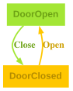

The State Machine
Think of a door that can be either open or closed. When it’s open, you can close it. When it’s closed, you can open it. That’s it — no other actions make sense. You can’t open a door that’s already open, and you can’t close a door that’s already closed. This simple behavior is what we’re modeling here.
Before diving into the code, let’s visualize our simple door state machine. This will help you understand the structure we’re about to implement.
State Diagram
The state diagram below shows all possible states and the valid transitions between them:
State Diagram: Door

In this diagram, you can see:
- Two states:
DoorOpenandDoorClosed(shown as rectangles) - Two transitions: The
Closetransition moves fromDoorOpentoDoorClosed, and theOpentransition moves fromDoorClosedtoDoorOpen - Arrows: The direction of each arrow shows which state changes are valid
Terminology note: Throughout this documentation, the
terms message, action, and transition are
used interchangeably to refer to the events that trigger state
changes[^terminology]. In Transit’s type system, these
correspond to the message types in your Msg variant.
Transition Table
For a more structured view, here’s the corresponding transition table:
| State | Message | State | ||
|---|---|---|---|---|
| DoorOpen | ⟶ | Close | ⟶ | DoorClosed |
| DoorClosed | ⟶ | Open | ⟶ | DoorOpen |
Each row shows one valid transition: which state you start in, which action you take, and which state you end up in. Notice that invalid actions — like trying to open an already open door — simply don’t appear in the table.
Now let’s see how we represent this in PureScript code.